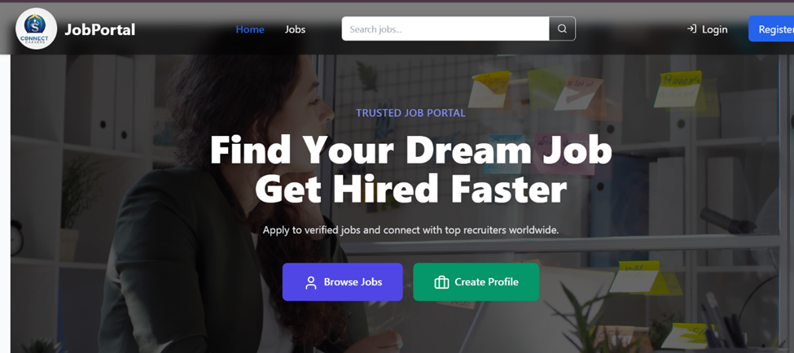

A full-stack job portal where candidates can search and apply for jobs while recruiters can post and manage opportunities.
JobPortal is a modern hiring platform designed for both job seekers and recruiters. Candidates can explore job listings, search by category, and apply directly through the platform, while recruiters can create job posts and manage applicants efficiently.
The platform focuses on clean UI, responsive layouts, and a smooth workflow for both sides of the hiring process.
HTML, CSS, JavaScript, React, Node.js, Express.js, MongoDB, and REST APIs.
This project improved my understanding of full-stack application architecture, responsive UI systems, authentication workflows, and scalable dashboard design.
The biggest challenge was designing a clean interface while managing multiple user roles and workflows inside the same platform.